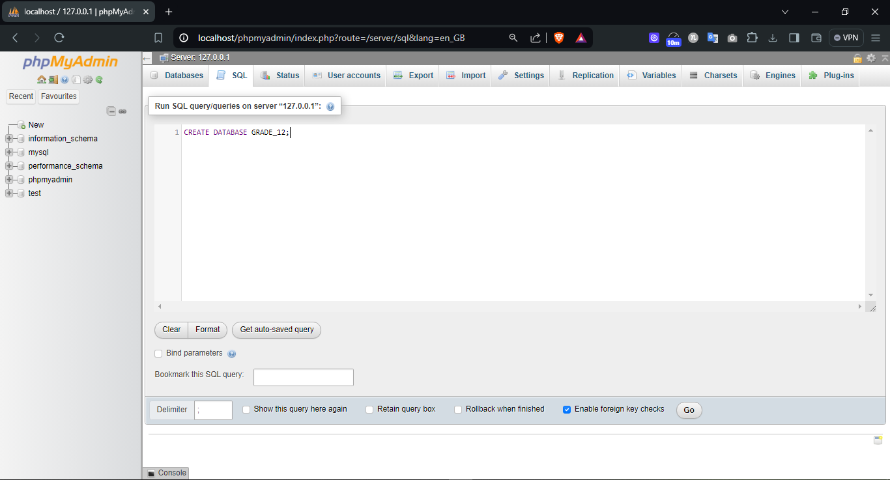

DBMS
SQL Scripting
The task was to work with
SQL commands
and explore their usages.
For the completion of the task, XAMPP was installed to host a local SQL server, and the following commands were dealt with to accomplish the given task.
SQL Keywords:
- CREATE
- DROP
- ALTER
- ADD
- UPDATE
- SET
- INSERT
- SELECT
Implementation
Step 1: Creating a Database Named
GRADE_12

Inside the Database:

Step 2: Creating a Table Named
Section_g
Navigate inside the database to the
SQL Query tab
to create a table named Section_g.

Database After Creating Tables:

Step 3: Adding a New Column Named
AGE
To understand modifying table data, I added a new column named
AGE.

After Adding the Age Column:

Step 4: Dropping the
AGE
Column
To understand the deleting mechanism, the newly created
AGE column was
then dropped.

Table After Dropping Age Column:

Step 5: Dropping the Table
Section_g
Navigate to the SQL tab of the database
GRADE_12 to
drop the table
Section_g.

Database After Dropping the Table
Section_g:

Step 6: Dropping the Database
GRADE_12
Navigate to the server SQL tab to drop the newly created database.

Server After Dropping Database
GRADE_12: